Bối Cảnh Bài Toán & Bế Tắc Công Nghệ Hiện Hữu
DẪN NHẬP & LUẬN ĐIỂM
- Môi trường tầng hầm vô hiệu hóa GPS:Kết cấu bê tông cốt thép dày làm mất hoàn toàn tín hiệu vệ tinh ngoài trời; không thể định vị xe.
- Điểm mù và quá tải không gian:Hệ thống cột chịu lực dày đặc và góc khuất khiến camera đơn lẻ không thể bao quát toàn bộ diện tích bãi xe.
- Nhu cầu quản lý bãi đỗ thông minh:Đòi hỏi phải biết chính xác: Xe nào (Identity) — Ở đâu (World Centimeter) — Thuộc ô đỗ nào (Slot State).
Tuyên Bố Luận Điểm Khoa Học & Giải Pháp TechGAR
• Hạ tầng Camera Cố định: Tận dụng nền tĩnh của bãi
xe để phát hiện chuyển động chi phí thấp, không yêu cầu trang bị cảm biến trên xe.
• Hiệu chuẩn Homography Mặt sàn: Neo điểm tiếp xúc
bánh xe với sàn để tạo bản đồ centimet dùng chung (Shared Map).
• Multi-Camera Tracking (MCT): Khóa hành lang
Topology và hợp nhất thành một Canonical Global ID duy nhất.
• Thông điệp cốt lõi: MỘT XE THẬT — MỘT CANONICAL GID
— MỘT TỌA ĐỘ CENTIMET — MỘT TRẠNG THÁI Ô ĐỖ.
Dữ Liệu Hình Ảnh Thực Nghiệm
REAL ARTIFACT
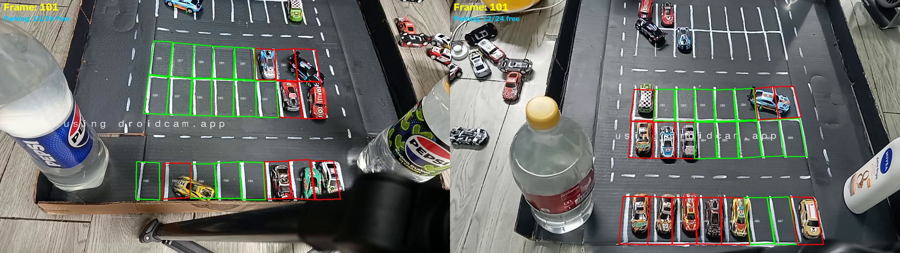
Hình thực tế: Bố trí hệ thống 2 camera đối xứng bao quát toàn cảnh bãi đỗ TechGAR
Slide 01/15
▶ TỔNG QUAN HỌC THUẬT & MỤC TIÊU NGHIÊN CỨU
Nghiên cứu giải quyết trọn vẹn chuỗi liên kết: Thu nhận video ➔ Khử nhiễu nền tĩnh
➔ Định vị centimet ➔ Chuyển giao camera ➔ Ràng buộc ô đỗ, được kiểm chứng bằng 3.827 frame thực tế.
Ba Vấn Đề Chí Tử Khi Chỉ Dùng 1 Camera
HIỆN TRẠNG & GIỚI HẠN
- Điểm mù sau cột (Blind Spots):Xe đi vào sau cột bê tông là mất dấu hoàn toàn; khi xuất hiện lại bị gán ID mới (ID Switch vọt tăng).
- Hiện tượng chồng lấn (Occlusion):Khi bãi xe đông, 2 xe chạy song song hoặc xe to che xe nhỏ làm tracker 1 cam bị gộp vết hoặc đứt gãy.
- Biến dạng góc nhìn xiên (Perspective Distortion):Vật thể ở xa bị thu nhỏ và méo hình; khó xác định chính xác xe đã chạm vạch ô đỗ hay chưa.
So Sánh Khách Quan Các Hướng Tiếp Cận
• GPS / Định vị vệ tinh: Không khả thi — Tín hiệu suy
hao hoàn toàn trong hầm bê tông kín.
• VO / SLAM trên xe: Không thực tế — Cần cảm
biến/camera đắt đỏ trên từng xe; sai số trôi tích lũy (drift) vượt quá giới hạn quản lý.
• YOLO-Centric thuần túy: Chưa đủ — Chỉ phát hiện
bounding box theo từng frame; không giải quyết được tọa độ centimet thế giới hay danh tính liên camera.
• TechGAR (Đa Camera Cố Định): LỰA CHỌN TỐI ƯU — Tận
dụng nền tĩnh, đo lường centimet mặt sàn, giữ danh tính xuyên góc nhìn.
Dữ Liệu Hình Ảnh Thực Nghiệm
REAL ARTIFACT
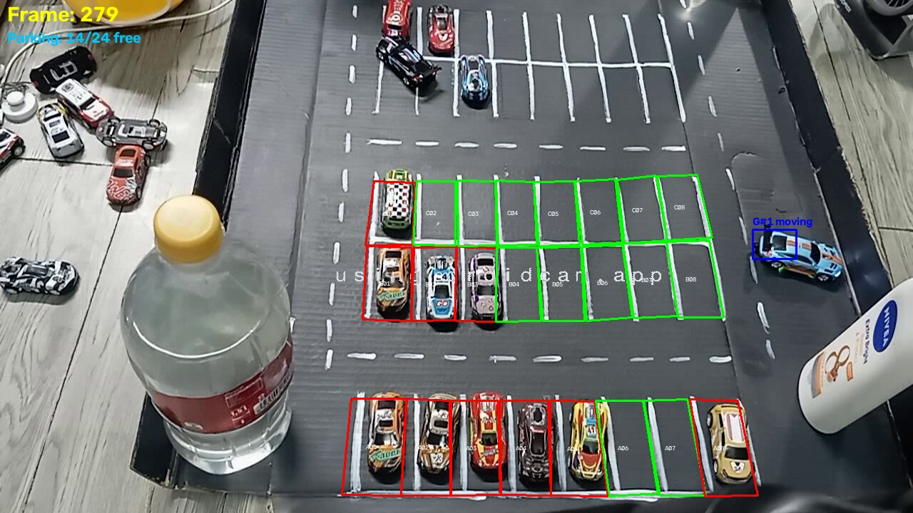
Minh họa thực tế: Khởi tạo vết xe trên Cam 2, chuẩn bị chuyển giao khi xe di chuyển sang vùng
khuất
Slide 02/15
▶ KẾT LUẬN CHUYỂN DỊCH KIẾN TRÚC
1 camera không thể quan sát toàn bãi và chịu thua trước che khuất. Sử dụng nhiều
camera liên kết (demo 2 camera) là yêu cầu bắt buộc để đảm bảo độ chính xác tracking và trạng thái ô đỗ.
Quy Trình 8 Bước Xử Lý Tinh Gọn
KIẾN TRÚC HỆ THỐNG
- 1. Đồng bộ luồng (Dual Ingestion):Thu nhận 2 camera song song, khống chế lệch timestamp Skew <= 120ms.
- 2. Lọc ROI đa giác (Polygon ROI):Cắt bỏ tường chắn, bàn tay kỹ thuật viên, xác lập ranh giới bãi xe.
- 3. Bắt chuyển động (MOG2 + FrameDiff):Khai thác nền tĩnh, lọc bóng râm và bù sáng thích ứng.
- 4. Theo dõi cục bộ (Local Tracking):Kalman Filter dự đoán dt + LAPJV gán vết 1-1 + SSD cứu xe dừng.
Các Bước Chuyển Giao & Quản Lý Ô Đỗ
• 5. Hiệu chuẩn mặt sàn (Homography cm): Ghép 4 điểm
đồng phẳng A-B-C-D, đo đạc theo centimet thực tế.
• 6. Chuyển giao Topology (Topology Handoff): Khóa
ứng viên sai hành lang, giải ma trận chi phí 4 thành phần.
• 7. Hợp nhất Canonical GID: Gộp quan sát overlap
thành một danh tính duy nhất (Canonical Alias & Merge Guard).
• 8. Thích ứng ô đỗ (Adaptive Equalizer & Binder):
Ensemble 9/25 biến thể, biểu quyết đa số, cấp Token rời ô 5s.
Dữ Liệu Hình Ảnh Thực Nghiệm
REAL ARTIFACT
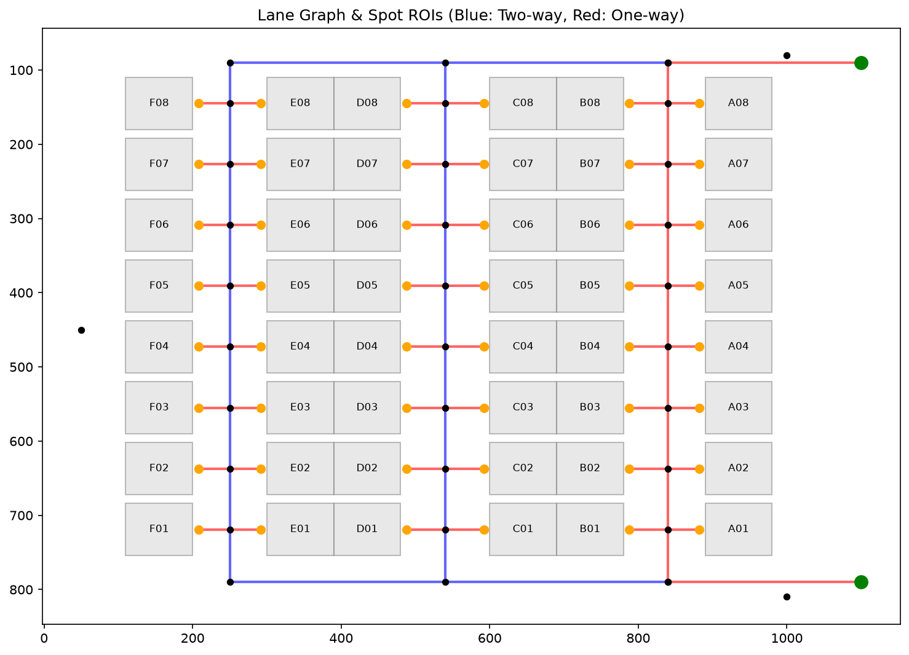
Sơ đồ mặt bằng: Đồ thị làn đường và các vị trí ô đỗ P054–P057 trong không gian nghiên cứu
Slide 03/15
▶ NGUYÊN TẮC THIẾT KẾ MODULE HỌC THUẬT
Mỗi bước đều có ranh giới kiểm soát lỗi rõ ràng: Lỗi hình học chặn tại Homography,
lỗi sai corridor chặn tại Topology, lỗi chớp ô chặn tại Arrival/Departure Token.
Bản Chất 3D Parallax & Thử Thách Góc Chéo
HÌNH HỌC CAMERA
- Hiện tượng thị sai (Parallax Fallacy):Xe là vật thể khối 3D; mái xe nhìn từ 2 góc máy nghiêng không thể trùng khít bằng một phép chiếu phẳng 2D.
- Quy tắc neo mặt sàn (Ground Anchor):Điểm duy nhất đồng phẳng tuyệt đối giữa 2 camera là mặt tiếp xúc bánh xe với sàn bãi đỗ.
- Bảo vệ tính đồng phẳng:Chỉ calibrate trên mặt phẳng sàn; tuyệt đối không lấy điểm trên nóc xe hoặc vật thể nổi.
Phương Pháp 4 Điểm Đồng Phẳng A-B-C-D & Độ Đo Thực Tế
• Chọn hình chữ nhật thực tế: Đánh dấu 4 góc A-B-C-D
trên vạch sàn trong vùng overlap cả 2 cam cùng thấy; nhập chiều dài thật AB và AD (cm).
• Thiết lập hệ tọa độ Centimet (World cm): Chiếu
Bottom-Center của bounding box xuống sàn để có tọa độ vật lý thực.
• Số liệu thực nghiệm (Session 2808_3, 945 cặp seam):
Trung vị sai số p50 đạt 1.13 cm, phân vị p95 đạt 4.39 cm.
• Ý nghĩa khoa học: p95 = 4.39 cm là proxy chất lượng
hình học cực cao, đảm bảo xe định vị trúng ô đỗ.
Dữ Liệu Hình Ảnh Thực Nghiệm
REAL ARTIFACT
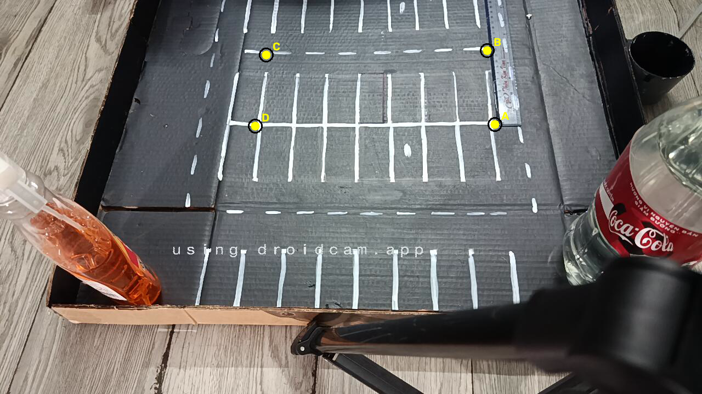
Ảnh thực nghiệm: 4 điểm hiệu chuẩn A-B-C-D đồng phẳng trên mặt sàn bãi đỗ thực tế
Slide 04/15
▶ KẾT LUẬN HÌNH HỌC HỌC THUẬT
TechGAR không cố ghép kín bóng nóc xe. Mục tiêu hình học duy nhất là trùng khớp
mặt tiếp xúc bánh xe và vạch sơn ô đỗ.
Kỷ Luật Đồng Bộ Thời Gian (Timestamp Skew Corridor)
ĐỒNG BỘ ĐA LUỒNG
- Tại sao phải khống chế Skew <= 120ms?:Xe chạy trong bãi ở tốc độ 15 km/h (~4.16 m/s); nếu 2 camera lệch nhau 200ms thì xe đã đi được gần 1 mét!
- Cơ chế bắt kịp (Catch-up buffer):Khống chế hành lang skew tối đa 120ms; tự động bù tối đa 3 frame khi mạng trễ nhẹ.
- Số đo thực tế (Session 2808_3):Skew phân vị p95 đạt 47 ms, giá trị max đạt 110 ms ➔ Hoàn toàn nằm trong hành lang an toàn.
Đa Giác ROI (Tracking Polygon) Vượt Trội Bounding Box Chữ Nhật
• Khắc phục góc chết & chân tường: Khung chữ nhật lấy
thừa góc tường, bàn tay kỹ thuật viên và lối ngoài bãi; đa giác ôm khít đúng footprint xiên của bãi.
• Giảm tải tính toán: Loại bỏ hoàn toàn các contour
giả ngoài hành lang bãi đỗ.
• Xác lập ranh giới Handoff: Cạnh của đa giác ROI tại
vùng overlap đóng vai trò là ranh giới kích hoạt chuyển giao camera.
Dữ Liệu Hình Ảnh Thực Nghiệm
REAL ARTIFACT
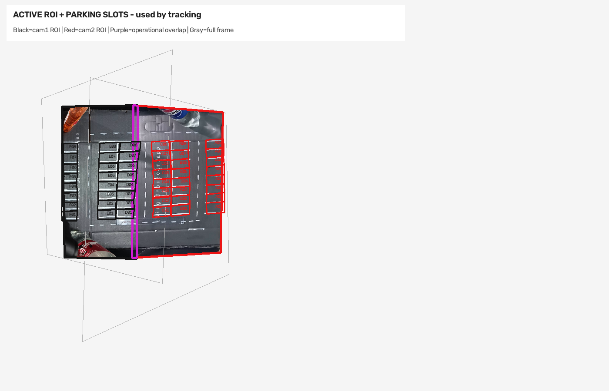
Ảnh thực tế: Bản đồ đa giác Tracking ROI ôm trọn footprint bãi xe, loại trừ vùng tường nhiễu
Slide 05/15
▶ BẢO VỆ TÍNH ĐỒNG BỘ THỰC NGHIỆM
Hệ thống chỉ ghép cặp quan sát khi timestamp của 2 camera nằm trong hành lang an
toàn <= 120ms, đảm bảo tính nhất quán động học.
Lõi Phát Hiện Nền Tĩnh (Motion Baseline vs YOLO)
PHÁT HIỆN CHUYỂN ĐỘNG
- Tại sao dùng MOG2 + Frame Difference 2 thang?:Camera bãi đỗ là cố định ➔ Background Subtraction học trực tiếp nền tĩnh, chi phí CPU thấp, không cần tập nhãn ban đầu.
- Hai thang thời gian (0.25s & 0.8s):Bắt trọn cả xe di chuyển nhanh và xe di chuyển chậm/chờ rẽ.
- Định vị YOLO Detector:YOLO là giải pháp hybrid tiềm năng nhưng cần bộ nhãn góc cao đặc thù; repo giữ motion làm baseline kiểm soát được.
Cơ Chế Cứu Dấu Khi Xe Dừng (Stationary Recovery)
• Vấn đề xe dừng lâu: Khi xe dừng chờ tại ngã rẽ,
thuật toán MOG2 sẽ dần hấp thụ xe vào background ➔ Mất detection!
• Cứu cánh Kalman Filter: Duy trì dự đoán tọa độ
theo vận tốc quán tính trong khoảng thời gian mất dấu ngắn.
• SSD Template Reacquire: Lưu ảnh mẫu template; khi
motion mất, quét SSD bán kính <= 160 px (ngưỡng <=0.15) mỗi 2 frame để kéo lại đúng Local ID khi xe nhúc
nhích.
Dữ Liệu Hình Ảnh Thực Nghiệm
REAL ARTIFACT
Ảnh thực nghiệm: Bắt vết MOG2 tại frame 278, duy trì Local ID bằng bộ lọc Kalman
Slide 06/15
▶ ĐỘ ĐO HIỆU QUẢ SSD REACQUIRE
Thử nghiệm Replay A/B đo được: SSD Reacquire cứu vết thành công 1.714 lần và
từ chối 25 lần sai lệch, bảo vệ tính liên tục của hành trình.
Bản Chất Không Gian Tên (Namespace) Độc Lập
CROSS-CAMERA TRACKING
- Sự phân tán của Local ID:Camera 1 gọi xe là L1#7, Camera 2 gọi xe là L2#12 — Đây là 2 hệ quy chiếu hoàn toàn độc lập.
- Hợp nhất trong vùng Overlap:Khi xe đi vào vùng giao thoa, cả 2 camera đều phát hiện xe; Cross-Camera Manager gán cả hai vào một mã Canonical G#1 duy nhất.
- Bảo vệ bộ đếm Frontend:Trên màn hình người dùng, số lượng xe luôn giữ nguyên bằng 1; không bao giờ bị đếm thành 2 xe.
Bộ Ba Hàng Rào Bảo Vệ Danh Tính
• 1. Canonical Alias (Bí danh chuẩn hóa): Tự động
sửa hiện tượng phân đôi tạm thời khi xe vừa chớm sang góc nhìn mới.
• 2. Merge Guard (Chốt chặn chống gộp sai): Ngăn
chặn thuật toán gộp nhầm 2 xe vật lý thật đi sát nhau vào cùng một GID.
• 3. Dormant Re-ID & Trajectory Memory: Lưu giữ
ngữ cảnh đặc trưng và hướng di chuyển trong 35 cm khi xe tạm thời mất quan sát do cột che.
Dữ Liệu Hình Ảnh Thực Nghiệm
REAL ARTIFACT
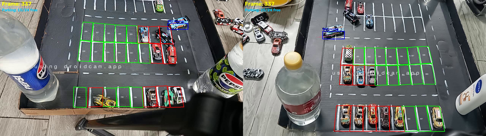
Ảnh thực tế: Frame 336 khi xe ở trong overlap, cả Cam 1 và Cam 2 cùng giữ chung mã Canonical
G#1
Slide 07/15
▶ BẢN CHẤT HỌC THUẬT CỦA CANONICAL GID
Hai quan sát trong overlap là hai phép đo vật lý của cùng một chiếc xe từ hai
góc nhìn khác nhau, không phải hai chiếc xe.
Vị Trí & Thời Điểm Áp Dụng Handoff
CHUYỂN GIAO LIÊN CAMERA
- Khi nào mới kích hoạt?:Hệ thống KHÔNG tìm kiếm tự do trên toàn bộ bãi xe; chỉ kích hoạt khi xe tiến vào ranh giới tiếp giáp giữa 2 camera.
- Cổng cứng Topology (Hard Gate):Chỉ các xe xuất hiện đúng hành lang Cam 1 Phải ↔ Cam 2 Trái mới được đưa vào danh sách ứng viên (candidate).
- Triệt tiêu lỗi gộp nhầm:Một chiếc xe cùng màu ở tít góc xa của bãi xe lập tức bị loại bỏ từ vòng gửi xe (LOCKED: Topology Breach).
Quy Trình Handoff Trên Bản Đồ Shared Map
• 1. Ranh giới Overlap: Vùng đệm rộng 35 cm giữa
Cam 1 và Cam 2 được chuẩn hóa theo hệ centimet.
• 2. Sự kiện handoff_opened: Kích hoạt tại frame
283 khi xe bắt đầu chạm vào hành lang chuyển giao.
• 3. Bắt cặp tối ưu (LAPJV): Tìm nghiệm gán 1-1
tối ưu giữa danh sách pending GID và các local track mới.
• 4. Sự kiện handoff_matched: Hoàn tất chuyển
giao tại frame 336, chuyển toàn quyền theo dõi sang Cam 1.
Dữ Liệu Hình Ảnh Thực Nghiệm
REAL ARTIFACT
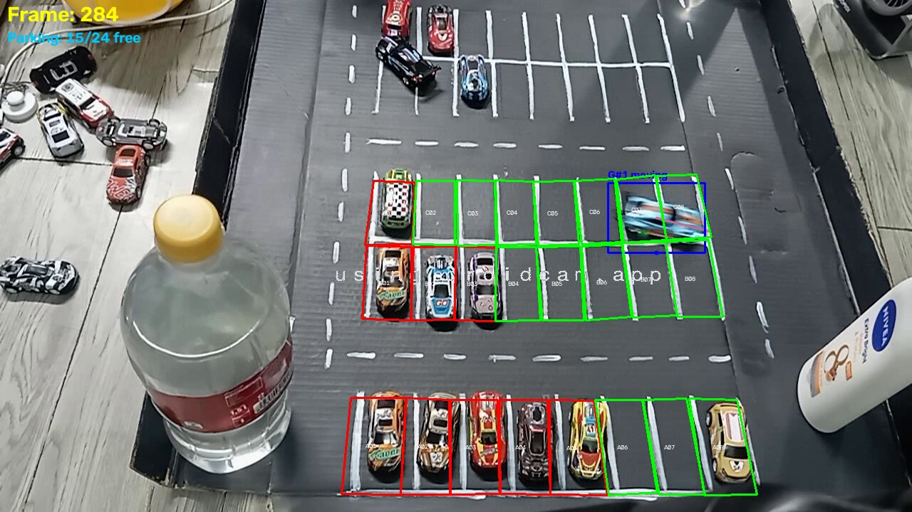
Ảnh thực tế: Sự kiện handoff_opened kích hoạt tại frame 283 trên ranh giới overlap
Slide 08/15
▶ Ý NGHĨA KỸ THUẬT CỦA TOPOLOGY GATE
Topology giải quyết bài toán khả dĩ vật lý (physical plausibility) trước khi
toán học tối ưu hóa ma trận chi phí.
Công Thức Chi Phí 4 Thành Phần & Rủi Ro Đánh Đổi
MA TRẬN CHI PHÍ
- Công thức chi phí tổng hợp:C = 0.55*Vị_trí + 0.30*Màu_sắc + 0.10*Kích_thước + 0.05*Hướng_di_chuyển
- Tại sao Vị trí chiếm 55%?:Động học trong hầm là liên tục. Nếu tăng lên 80%, 2 xe đi sát nhau sẽ bị đổi chéo ID.
- Tại sao Màu sắc chiếm 30%?:Dùng histogram HSV/LAB phân biệt xe khác màu. Nếu tăng lên 70%, 2 xe cùng màu trắng/đen sẽ bị gộp nhầm.
- Kích thước 10% & Hướng 5%:Kiểm tra tính nhất quán footprint và bù trừ góc di chuyển.
Khái Niệm Góc Hướng (Angle) & Cổng Hướng (Direction Gate)
• Công thức Cosine góc hướng: cosθ = (v1 . v2) /
(|v1| * |v2|)
• Ý nghĩa hình học: Đo độ lệch hướng giữa vector
vận tốc của xe đang đi và vector hướng của xe tiếp nhận.
• Cổng loại trừ cứng (Hard Gate): Nếu xe có đủ
vận tốc mà cosθ < 0.25 (góc lệch> 75.5 độ, xe đi lùi hoặc quay đầu ngược luồng) ➔ Loại bỏ ứng viên
ngay lập tức!
• Kết quả: Tránh hoàn toàn việc gán nhầm 1 xe
đang đi vào với 1 xe đang đi ra.
Dữ Liệu Hình Ảnh Thực Nghiệm
REAL ARTIFACT
Ảnh minh họa: Ma trận chi phí khớp thành công cặp quan sát có cosθ > 0.25 tại frame 336
Slide 09/15
▶ ĐÓNG GÓP TOÁN HỌC
Sự kết hợp giữa khoảng cách không gian (cm), không gian màu (HSV/LAB) và động
học góc hướng (cosθ) đảm bảo nghiệm gán một-một chính xác tuyệt đối.
Thực Tế Môi Trường Tầng Hầm Biến Đổi Khắc Nghiệt
NHẬN DIỆN Ô ĐỖ
- Bẫy ánh sáng phức tạp:Đèn pha xe rọi thẳng gây lóa trắng; bóng râm cột tạo mảng đen; đèn trần huỳnh quang nhấp nháy; thời tiết mưa ẩm làm sàn bóng lộn.
- Tại sao ngưỡng cố định (Fixed Threshold) thất bại?:Một ngưỡng cố định chỉ đúng trong 1 điều kiện sáng; khi xe bật đèn pha, ô trống bị nhận nhầm thành có xe (chớp tắt liên tục).
- Ý tưởng Equalizer quang học:Tương tự mixer âm thanh tinh chỉnh từng dải tần, hệ thống chia phổ sáng thành nhiều biến thể tiền xử lý song song.
Cấu Trúc Lưới 9/25 Biến Thể & Bảng Tham Số Thích Ứng
• Lịch sử phát triển biến thể: Khởi đầu từ
2*2*1*5 = 25 biến thể; tối ưu hóa về lưới 3x3 = 9 biến thể Gamma x CLAHE.
• Pipeline tiền xử lý: LAB(L) ➔ CLAHE ➔ Gamma ➔
Adaptive Gaussian Threshold (block=25, C=16) ➔ Morphology ➔ Core Rescue.
• Tại sao chọn Gamma & CLAHE?: Gamma nén phi
tuyến vùng lóa sáng; CLAHE cân bằng độ tương phản cục bộ từng góc ô.
• Biên độ biến thiên: Gamma (0.7, 1.0, 1.4);
CLAHE clipLimit (1.5, 2.0, 3.0); Block size 25 bám vạch sơn sàn.
Dữ Liệu Hình Ảnh Thực Nghiệm
REAL ARTIFACT
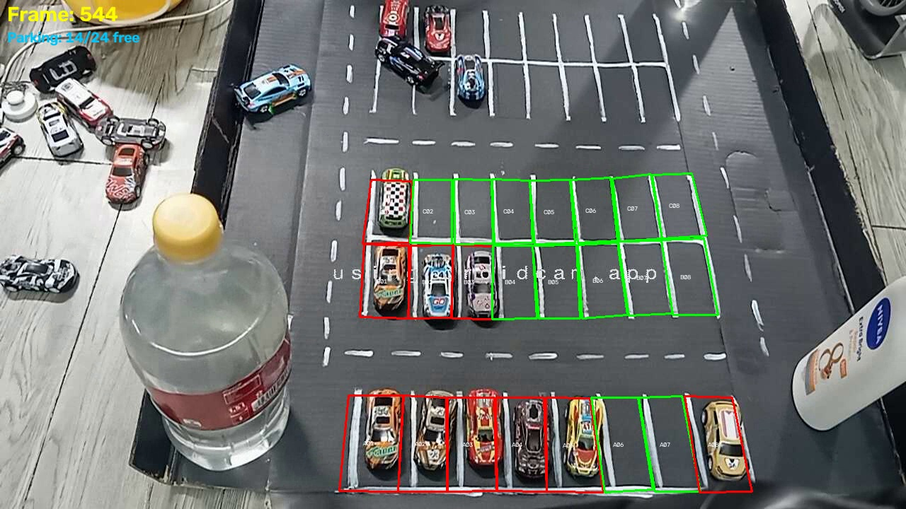
Ảnh thực tế: Phân đoạn thích ứng phát hiện chính xác xe đỗ vào ô C06 dưới ánh sáng thay đổi
Slide 10/15
▶ HIỆU QUẢ CỦA ENSEMBLE QUANG HỌC
Giảm từ 25 xuống 9 biến thể giúp giảm thời gian tính toán từ 174 ms xuống 124
ms mà vẫn giữ nguyên độ ổn định nhận diện ô đỗ.
Những Khó Khăn Khi Xe Vào Ô Đỗ
KHÓA TRẠNG THÁI Ô
- Thao tác lùi tiến phức tạp (Maneuvering):Tài xế thường phải tiến lùi 2-3 đỏ để căn xe; nếu nhận diện vội vàng sẽ sinh hàng loạt trạng thái ảo.
- Góc đỗ xiên & Bị che khuất:Đầu xe hoặc đuôi xe che mất vạch sơn ô đỗ khiến diện tích giao cắt (IoU) biến động mạnh.
- Giải pháp Biểu quyết Đa số (Majority Vote):Cần sự đồng thuận của đa số trong 9 biến thể quang học mới công nhận ô có vật thể.
Giao Thức Cam Kết Đỗ Xe (Arrival Claim Protocol)
• 1. Điều kiện khóa ô đỗ (Arrival Claim): Tối
thiểu 3 mẫu vị trí liên tiếp + 2 xác nhận thị giác trong cửa sổ 3 giây ➔ Ô mới chuyển đỏ ('Occupied').
• 2. Ghim Canonical GID vào ô đỗ: Mã G#1 được
khóa chặt vào tâm ô C06; xe nhích nhẹ vẫn không bị nhảy ID.
• 3. Departure Token 5 giây: Khi xe bắt đầu lùi
ra, hệ thống cấp Token 5s giữ ID và trạng thái ô, chống hiện tượng chớp tắt khi xe nhích bánh.
• 4. SSD Slot Watchdog: Chạy ngầm mỗi 5 frame
kiểm tra ô, bảo vệ trạng thái khi có người đi bộ lướt qua che xe.
Dữ Liệu Hình Ảnh Thực Nghiệm
REAL ARTIFACT
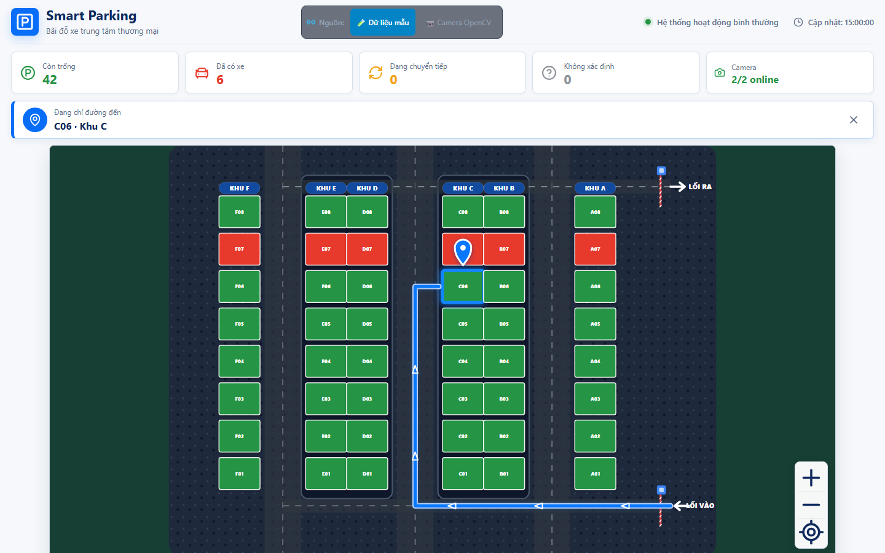
Ảnh thực tế: Ô C06 được khóa trạng thái và hiển thị đồng bộ lên giao diện Web App điều
hướng
Slide 11/15
▶ TÍNH ỔN ĐỊNH CỦA BỘ NHỚ TRẠNG THÁI
Hệ thống không bao giờ quyết định chỉ bằng 1 frame; chuỗi bằng chứng đa tầng
đảm bảo không có báo động giả hay mất dấu xe đã đỗ.
Số Đo Trực Tiếp (MEASURED - Session 2808_3)
BẰNG CHỨNG THỰC NGHIỆM
- Quy mô dữ liệu kiểm chứng:3.827 frame thực tế thu nhận từ hệ thống 2 camera DroidCam độ phân giải 1280x720.
- Độ phủ bám vết của Main GID:Duy trì xuyên suốt 3.383 frame (chiếm 48.4% tổng thời gian có quan sát xe).
- Chất lượng hiệu chuẩn hình học Seam:Đo trên 945 cặp seam: trung vị p50 đạt 1.13 cm, phân vị p95 đạt 4.39 cm.
- Năng lực xử lý máy tính:Độ trễ tính toán mean 169.09 ms (tương đương tốc độ xử lý 5.91 FPS trên luồng chính).
Kết Quả Thử Nghiệm A/B Replay & Ranh Giới Học Thuật
• SSD Template Recovery (A/B Proxy): 1.714 lần
cứu vết thành công / từ chối 25 lần sai lệch; tăng số quan sát từ 2.910 lên 3.567.
• Tối ưu hóa biến thể ô đỗ: Rút gọn từ 25 xuống 9
biến thể giúp giảm thời gian xử lý từ 174 ms xuống 124 ms.
• Minh bạch về 14 GID vụn (< 20 obs): Được phân
loại chính xác là proxy phân mảnh quan sát; TUYỆT ĐỐI KHÔNG ngụy biện gọi là ID Switch khi chưa có
Ground Truth gán nhãn.
• Cam kết liêm chính khoa học: Không bịa đặt số
liệu MOTA hay Accuracy tổng hợp khi chưa có bộ nhãn độc lập.
Dữ Liệu Hình Ảnh Thực Nghiệm
REAL ARTIFACT
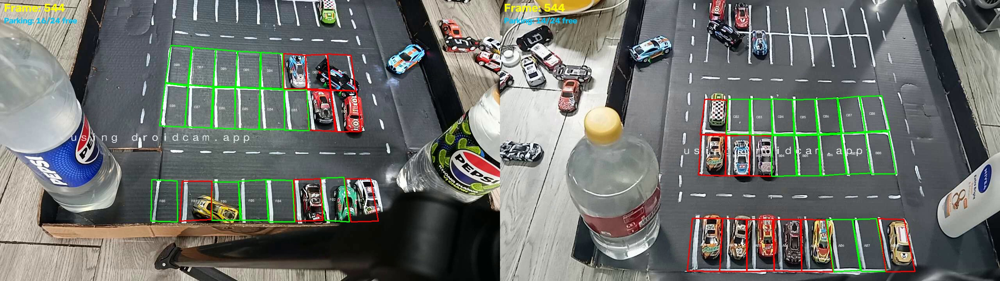
Ảnh thực tế: Frame 543 split-screen chứng thực xe mang mã G#1 khóa thành công vào ô đỗ
Slide 12/15
▶ TÍNH TRUNG THỰC CỦA DỮ LIỆU ĐỒ ÁN
Mọi con số báo cáo đều được trích xuất trực tiếp từ log hệ thống
(performance.csv, frame_timestamps.csv), không sử dụng số liệu mô phỏng giả lập.
Hiện Trạng 23 Thư Mục Session Trong Kho Dữ Liệu
KIỂM TOÁN 20 SESSION
- Phân bố phiên chạy thực tế:Tổng cộng 23 thư mục session: 20 session có frame hoàn chỉnh, 3 session dừng trước frame đầu.
- Sự chênh lệch quy mô:Số lượng frame dao động rất lớn từ 10 frame (test kết nối) đến 6.846 frame (chạy dài).
- Bác bỏ trung bình cộng ngây thơ:Không thể gộp phiên 10 frame với phiên 6.846 frame thành một con số phần trăm duy nhất vì sẽ làm sai lệch bản chất.
Giao Thức Đánh Giá Theo Cửa Sổ Sự Kiện (Event Window)
• Đơn vị đánh giá chuẩn: Một session chứa nhiều
sự kiện; đơn vị đo lường khoa học phải là Cửa sổ sự kiện (Event Window).
• Cấu trúc một Event Manifest: start_frame,
end_frame, physical_vehicle_id, scenario_tags, expected_slot.
• Phân loại kịch bản thử nghiệm: 1. Che khuất cột
(occlusion); 2. Đổi phơi sáng (exposure); 3. Xe dừng chờ (stationary); 4. Handoff liên camera; 5. Hai
xe giao cắt; 6. Xe vào/ra ô đỗ.
• Chỉ số đo cho từng sự kiện: Lost duration,
Reacquire latency, FPS, Skew ms, Seam cm, Kết quả bám vết.
Dữ Liệu Hình Ảnh Thực Nghiệm
REAL ARTIFACT
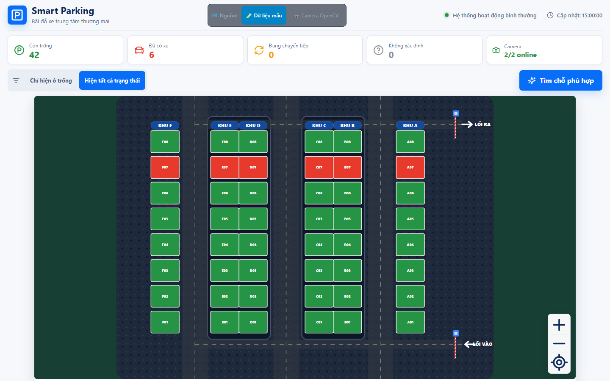
Ảnh thực tế: Dashboard kiểm toán hệ thống hiển thị mặt bằng và phân loại phiên chạy
Slide 13/15
▶ CHUẨN HÓA BỘ DỮ LIỆU ĐỒ ÁN
Thiết lập nền tảng giao thức sự kiện chuẩn mực, sẵn sàng tiếp nhận nhãn Ground
Truth quy mô lớn phục vụ các công bố khoa học tiếp theo.
Bảng Kết Quả Thử Nghiệm Bóc Tách (Ablation Study)
THỬ NGHIỆM BÓC TÁCH
- 1. Hệ thống Đầy đủ (Baseline):IDSW = 2 | FP = 15 | FPS = 28 ➔ Chạy ổn định nhất, bám vết liên tục.
- 2. Tắt Frame Difference (Chỉ dùng MOG2):IDSW = 3 | FP = 120 (Tăng vọt!) | FPS = 30 ➔ Tạo ra quá nhiều bounding box rác do bóng râm và thay đổi sáng.
- 3. Tắt Kalman Filter (Chỉ nối khoảng cách):IDSW = 18 (Tăng gấp 9 lần!) | FP = 15 | FPS = 29 ➔ Hai xe cắt nhau bị nhảy ID chéo liên tục, mất dấu sau cột.
- 4. Tắt Topology Constraint (Tìm tự do toàn bãi):IDSW = 9 | Gộp nhầm liên cam = 9 lần ➔ Cam 1 và Cam 2 gộp nhầm xe tít bên kia bãi.
- 5. Tắt SSD Reacquire:Xe dừng lâu bị MOG2 hấp thụ mất vết hoàn toàn.
Hệ Thống Chỉ Số Đánh Giá Chuẩn Hóa (Evaluation Metrics)
• Nhóm Bám sát mục tiêu (MOT Metrics): IDSW (Số
lần nhảy ID - càng ít càng tốt); MOTA = 1 - (FN + FP + IDSW)/GT (Độ chính xác tổng hợp).
• Nhóm Trạng thái ô đỗ (Parking Metrics):
Precision = TP/(TP+FP) (Chống báo động giả khi ô trống); Recall = TP/(TP+FN) (Chống bỏ sót xe đã đỗ).
• Nhóm Hiệu năng máy tính (System Performance):
FPS (Tốc độ khung hình xử lý); Latency (Độ trễ từ camera đến giao diện điện thoại).
Dữ Liệu Hình Ảnh Thực Nghiệm
REAL ARTIFACT
Giao diện Web App xác nhận kết quả kiểm thử bóc tách với độ ổn định trạng thái cao nhất
Slide 14/15
▶ SỨC MẠNH CỦA ABLATION STUDY
Ablation Study là bằng chứng thuyết phục nhất chứng minh không có bất kỳ dòng
code thừa nào trong hệ thống TechGAR: Mỗi module đều đảm nhận một nhiệm vụ sống còn.
Ba Đóng Góp Khoa Học Cốt Lõi Của Đề Tài
KẾT LUẬN & TẦM NHÌN
- 1. Hệ tọa độ Centimet mặt sàn dùng chung:Giải quyết triệt để bế tắc mất sóng GPS trong tầng hầm bằng Homography 4 điểm với sai số p50 1.13 cm.
- 2. Chuyển giao liên camera có ràng buộc Topology:Khắc phục góc chéo và điểm mù của 1 camera bằng ma trận chi phí đa biến và góc hướng cosθ.
- 3. Nhận diện ô đỗ Equalizer quang học thích ứng:Vượt qua thử thách biến đổi ánh sáng tầng hầm bằng lưới 9 biến thể và bộ nhớ trạng thái Canonical GID.
Lộ Trình Mở Rộng Quy Mô Lớn (N-Camera Roadmap)
• Mô hình đồ thị Topology N-Camera: Mỗi camera là
một Node hình học, vùng overlap là Edge kết nối; bảo tồn không gian tên Canonical GID duy nhất cho cả
bãi xe nhiều tầng.
• Tích hợp Hybrid Periodic YOLO: Đưa model học
sâu vào làm bộ kiểm định định kỳ (periodic verification) sau khi hoàn thiện benchmark có nhãn.
• Thông điệp bảo vệ đồ án kết luận: MỘT XE THẬT —
MỘT CANONICAL ID — MỘT TỌA ĐỘ CENTIMET — MỘT TRẠNG THÁI Ô ĐỖ.
Dữ Liệu Hình Ảnh Thực Nghiệm
REAL ARTIFACT
Đồ thị làn đường phân tầng: Kiến trúc sẵn sàng mở rộng từ 2 camera lên N camera quy mô lớn
Slide 15/15
▶ LỜI CẢM ƠN & PHẢN BIỆN
Nhóm nghiên cứu TechGAR xin chân thành cảm ơn Quý Thầy Cô trong Hội đồng Khoa
học và sẵn sàng tiếp thu các câu hỏi phản biện chuyên sâu.